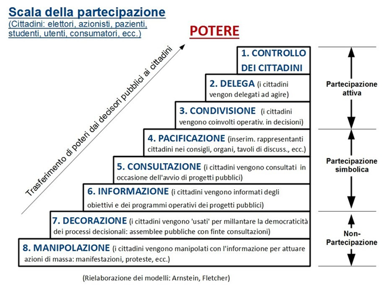
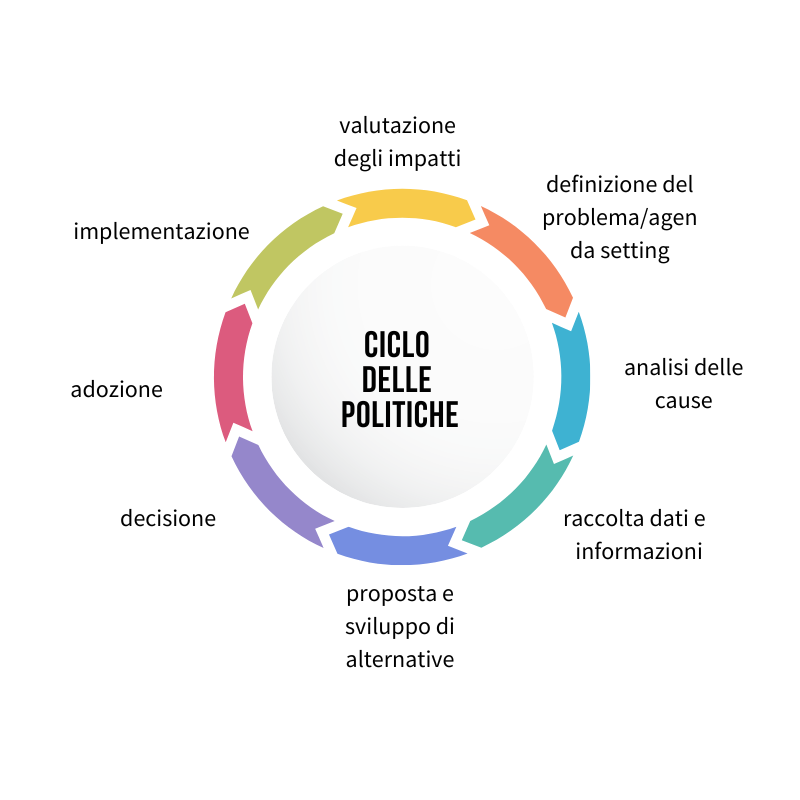

Le politiche pubbliche e la co-progettazione sul monitoraggio ambientale e sul monitoraggio civico
I conflitti ambientali, ovunque nel mondo, sono straordinarie palestre di esercizio di una partecipazione collettiva che è anche costruzione di comunità, andando a rafforzare legami sociali e a sperimentare continuamente modalità decisionali al loro interno e strumenti di pressione, mobilitazione e coinvolgimento civico verso l’esterno.
Lə attivistə ambientali praticano innovazione democratica. Ma a volte con chi codifica innovazione democratica c’è una profonda distanza, anche di linguaggio.
Per esempio, con la stessa definizione del termine partecipazione.
Recarsi periodicamente alle urne, interessarsi della qualità della vita nel proprio territorio, mobilitarsi per una causa, scrivere un appello o un post, andare in piazza, occupare i binari per protesta contro una discarica, prendere parte a una mobilitazione, contribuire all’elaborazione di decisioni pubbliche, prendersi cura di un bene comune sono solo alcune espressioni della partecipazione politica.
Da decenni, a livello internazionale, nazionale e locale, si sono sviluppati quadri teorici e normativi che danno al concetto di partecipazione un significato specifico che guarda ai processi partecipativi o deliberativi concertati con la pubblica amministrazione o di diretta collaborazione.
Nel leggere norme e raccomandazioni sembra assodato che allargare i processi decisionali nel ciclo della formazione delle politiche pubbliche permetta di sviluppare processi inclusivi e più sostenibili, aiutando le amministrazioni a comprendere i bisogni ed elaborare scelte migliori e più sostenibili.
È diventato sempre più evidente che i problemi complessi non possono essere risolti da un’unica organizzazione. La risoluzione dei problemi è una responsabilità condivisa che richiede l’azione di tutte le parti interessate.
Eppure, le pratiche di dialogo strutturato con la pubblica amministrazione sono ancora demandate a sparute buone pratiche di amministratori illuminati.
È necessario sicuramente partire da una definizione comune che ci permetta di smascherare forme puramente simboliche di apertura di spazi di partecipazione e di inquadrarne le pratiche.

A queste si aggiungono, non come alternative alle forme democratiche delegative o partecipative ma in misura complementare, anche le esperienze cosiddette deliberative, che puntano sul confronto informato e paritetico tra i decisori e la cittadinanza.
Come osserva Luigi Bobbio a riguardo di questa teoria “l’essenza della democrazia non consiste nella conta dei voti tra posizioni precostituite, secondo il principio di maggioranza, o nella negoziazione tra interessi dati, ma nella discussione fondata su argomenti (deliberation, in inglese) tra tutti i soggetti coinvolti dal tema sul tappeto. Le numerose esperienze pratiche che si richiamano alla democrazia deliberativa si fondano perciò su due pilastri: da un lato l’uso del confronto argomentato, dall’altro l’inclusione di tutti gli interessi e i punti di vista che sono toccati dall’oggetto della discussione. La democrazia deliberativa è, quindi, una forma di democrazia partecipativa, ma i suoi contorni sono più circoscritti e più definiti. Esclude la pura e semplice azione di pressione dei movimenti o delle associazioni sulle istituzioni (che invece la democrazia partecipativa sembrerebbe ammettere) e pretende che tra i diversi punti di vista si instauri un confronto dialogico”.
Nel solco della democrazia deliberativa ha assunto forza un’altra pratica partecipativa diretta alla creazione di esperienze e comunità di monitoraggio civico. Sono attiviste e attivisti impegnatə in attività di verifica, controllo, raccolta di idee e proposte nei confronti delle decisioni pubbliche, a partire dai dati e dalle informazioni rese disponibili dalle amministrazioni responsabili. Sono pratiche che si sono nutrite di strumenti quali il web 2.0, gli open Government data, esperienze di hacktivism e utilizzo di media civici e che si sono diffuse sul monitoraggio di opere e politiche pubbliche.
Ha inoltre visto importanti passi avanti, di prassi e normativi, il concetto di collaborazione sussidiaria, un modello organizzativo disciplinato nel regolamento sull’amministrazione condivisa dei beni comuni, che, in attuazione del principio costituzionale di sussidiarietà orizzontale di cui all’art. 118, co. 4, consente ai cittadini e all’amministrazione pubblica, in specie ai comuni, di svolgere su un piano paritario attività di interesse generale, concernenti la cura, la rigenerazione e la gestione condivisa dei beni comuni.
Pratiche di democrazia attiva, partecipativa, deliberativa e collaborativa sono, o sarebbero, utili in ogni fase del ciclo di formazione delle politiche pubbliche

Diffondere pratiche di monitoraggio ambientale partecipato condotto attraverso gli strumenti della citizen science estrema significa approfondire uno strumento di incidenza politica che attiviste e comitati possono usare. Perché le comunità che si trovano coinvolte e protagoniste di una vertenza per la difesa dei beni comuni ambientali nei loro percorsi si ritrovano ad aver bisogno di una grande cassetta degli attrezzi fatta di strumenti e metodologie.
Questo strumento può essere usato in diversi momenti del ciclo delle politiche pubbliche raccogliendo informazioni utili per portare una tematica ambientale dal basso all’interno dell’agenda setting, come momento di attivazione partecipativa nella fase di raccolta informazioni, nello sviluppo e la valutazione delle alternative, nel monitoraggio dell’implementazione.
Inoltre, l’uso consapevole e corretto dei dati ci permette di iniziare a colmare una asimmetria informativa e fornire nuove basi comuni di dialogo tra i decisori e le persone.
La crisi ecologica e climatica ci impone di attuare politiche complesse che più che mai hanno bisogno dell’attuazione di forme di innovazione democratica, che devono uscire delle buone pratiche e diventare consuetudine.